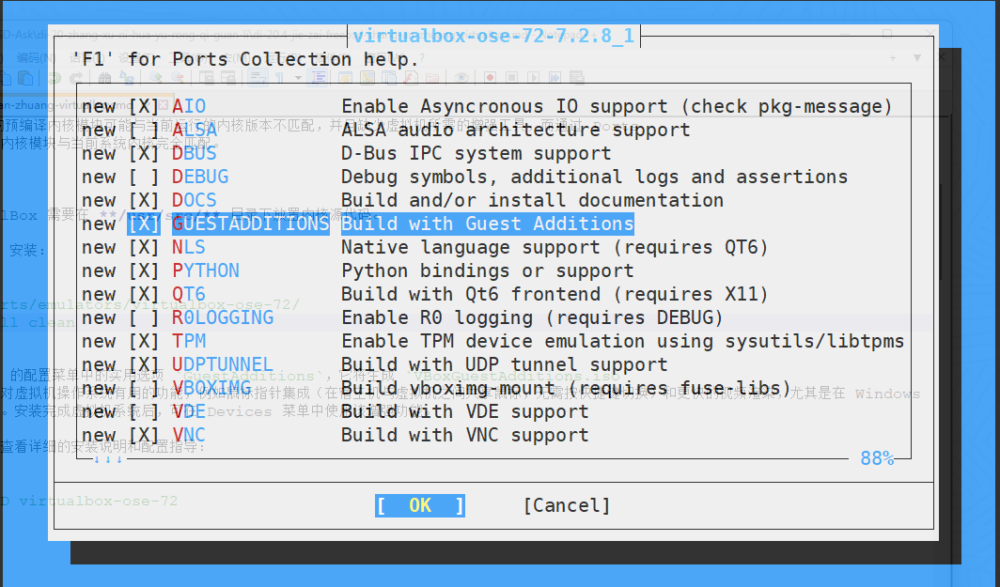

在 FreeBSD 上安装 VirtualBox
Table of Contents
VirtualBox 是甲骨文（Oracle）公司开发的跨平台第二类虚拟机管理程序（Type-2 hypervisor），适用于包括 Windows、macOS、Linux 和 FreeBSD 在内的大多数操作系统。它同样可以运行 Windows 或类 UNIX 的虚拟机系统。
VirtualBox 自 7.0 版本起采用 GNU 通用公共许可证第三版（GPLv3）协议开源发布（4.0 至 6.1 版本为 GPLv2） 支持 x86 与 AMD64 架构的硬件辅助虚拟化（Intel VT-x 与 AMD-V） 硬件辅助虚拟化技术使虚拟机可以直接访问部分硬件资源，显著提升虚拟化性能
自 4.0 起，VirtualBox 只有开源版本（4.0 至 6.1 称 Open Source Edition，7.0 起基础包直接以 GPLv3 发布），其余组件以 闭源扩展包 VirtualBox Extension Pack 的形式单独提供，尚不支持 FreeBSD
自 7.0 起，EHCI 与 xHCI USB 控制器设备已包含在开源基础包中，无需扩展包即可使用 USB 2.0/3.0 直通功能，此前该功能由扩展包提供
扩展包当前仅提供 PXE 网络启动 ROM 及云集成等附加功能 注：VRDP 服务器、USB 智能卡模拟及磁盘与虚拟机加密自 7.2.6 起移入基础包，USB 摄像头自 7.2.2 起移入基础包
VirtualBox 在 FreeBSD 上有多个版本可供选择。7.2 版本为当前维护版本
各版本均提供无 X11 的 -nox11 变体（例如 emulators/virtualbox-ose-nox11-72），适用于无图形界面的服务器环境，仅可通过命令行工具 VBoxManage 操作
安装 VirtualBox
本节安装 emulators/virtualbox-ose-72
使用 pkg 安装的预编译内核模块可能与当前运行的内核版本不匹配，并且缺少虚拟机所需的增强工具，而通过 Ports 编译安装可以确保内核模块与当前系统内核完全匹配。
构建 VirtualBox 需要在 /usr/src/ 目录下放置内核源代码
推荐使用 Ports 安装：
$ cd /usr/ports/emulators/virtualbox-ose-72/ $ make config-recursive $ make install clean
需要在 Ports 配置菜单中选中实用选项 GuestAdditions ，它将生成 /usr/local/lib/virtualbox/additions/VBoxGuestAdditions.iso 文件

GuestAdditions 提供了多项对虚拟机操作系统有用的功能
例如鼠标指针集成（在宿主机与虚拟机之间共享鼠标，无需按快捷键切换）和更快的视频渲染 尤其是在 Windows 虚拟机中更为明显 虚拟机系统安装完成后，可在设置菜单中选择“安装增强功能...”
可以通过以下命令查看详细的安装说明和配置指导：
$ pkg info -D virtualbox-ose-72
文件结构
/
├── boot/
│ └── loader.conf # 内核模块加载配置
├── etc/
│ ├── rc.conf # 系统启动配置
│ ├── devfs.rules # DevFS 规则文件
│ └── vbox/
│ └── networks.conf # 旧版 VirtualBox 网络配置位置
├── tmp/
│ └── .vbox-*-ipc # VirtualBox IPC 临时文件
└── usr/
├── local/
│ └── etc/
│ └── vbox/
│ └── networks.conf # VirtualBox 网络配置
├── ports/
│ └── emulators/
│ └── virtualbox-ose-72/ # VirtualBox Ports 目录
└── src/ # 内核源代码目录
配置 VirtualBox
加载 vboxdrv 内核模块，该模块为 VirtualBox 提供核心虚拟化功能。编辑 /boot/loader.conf ：
vboxdrv_load="YES"
也可通过 kldload vboxdrv 手动加载以即时生效
启用桥接网络支持：允许虚拟机直接连接物理网络
$ service vboxnet enable
默认情况下，/dev/vboxnetctl 的权限较为严格：
$ ls -loa /dev/vboxnetctl crw------- 1 root wheel - 0x75 5月 22 19:07 /dev/vboxnetctl
需更改权限以启用桥接网络，请在 /etc/devfs.conf 中添加以下内容：
own vboxnetctl root:vboxusers perm vboxnetctl 0660
安装 VirtualBox 时会创建 vboxusers 用户组
必须将所有使用 VirtualBox 的用户都添加到该组和 operator 组（USB 支持）中
可使用 pw 命令添加用户 ykla（替换为实际用户）：
$ pw groupmod vboxusers -m ykla $ pw groupmod operator -m ykla
| Previous: Podman | Home: 虚拟化和容器管理 |